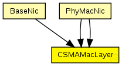
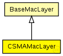

This documentation is released under the Creative Commons license
This documentation is released under the Creative Commons licenseC++ definition: click here
CSMA MAC protocol
The following diagram shows usage relationships between types. Unresolved types are missing from the diagram. Click here to see the full picture.
The following diagram shows inheritance relationships for this type. Unresolved types are missing from the diagram. Click here to see the full picture.
| BaseMacLayer (simple module) |
Base module for every mac layer module |
If a module type shows up more than once, that means it has been defined in more than one NED file.
| BaseNic (compound module) |
This NIC implements an 802.11 network interface card. |
| PhyMacNic (compound module) | (no description) |
| PhyMacNic (compound module) | (no description) |
| Name | Type | Default value | Description |
|---|---|---|---|
| notAffectedByHostState | bool | false | |
| coreDebug | bool |
debug switch |
|
| headerLength | double |
length of the MAC packet header (in bits) |
|
| slotDuration | double |
how long is a slot? [s] |
|
| difs | double |
maximum time between a packet and its ack [s] |
|
| maxTxAttempts | double |
maximum number of transmission attempts |
|
| queueLength | int |
length of the MAC queue |
|
| defaultChannel | double |
default channel |
|
| bitrate | double |
bit rate [bps] |
|
| txPower | double |
tx power [mW] |
|
| contentionWindow | double |
contention window |
| Name | Value | Description |
|---|---|---|
| class | CSMAMacLayer |
| Name | Direction | Size | Description |
|---|---|---|---|
| upperGateIn | input |
from application layer |
|
| upperGateOut | output |
to application layer |
|
| upperControlIn | input |
control from application layer |
|
| upperControlOut | output |
control to application layer |
|
| lowerGateIn | input |
from NIC |
|
| lowerGateOut | output |
to NIC |
|
| lowerControlIn | input |
control from NIC |
|
| lowerControlOut | output |
control to NIC |
// // CSMA MAC protocol // simple CSMAMacLayer extends BaseMacLayer { parameters: @class(CSMAMacLayer); // how long is a slot? [s] double slotDuration @unit(s); // maximum time between a packet and its ack [s] double difs @unit(s); // maximum number of transmission attempts double maxTxAttempts; // length of the MAC queue int queueLength; // default channel double defaultChannel; // bit rate [bps] double bitrate @unit(bps); //tx power [mW] double txPower @unit(mW); // contention window double contentionWindow; }
This documentation is released under the Creative Commons license